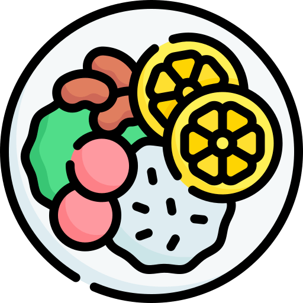

| Dias da semana |  Almoço | Janta | Horários |
|---|---|---|---|
| Segunda-Feira | Arroz, Arroz Integral/ Feijão Preto/ Purê Cabotiá/ Frango Assado/ Hamburguer PTS/ Alface, Chuchu, Cenoura/ Sagu | Arroz, Arroz Integral/ Feijão Preto/ Batata Doce/ Carne Suína/ Omelete/ Alface, Chuchu, Cenoura/ Sagu | Almoço: 11:30 / 13:00 Janta: 18:00 / 20:00 |
| Terça-Feira | Arroz, Arroz Integral/ Feijão Carioca/ Mandioca/ Carne Suína/ Ovo Grelhado/ Repolho, Beterraba, Abobrinha/ Banana | Arroz, Arroz Integral/ Feijão Carioca/ Polenta/ Frango Grelhado/ Abobrinha Recheada/ Repolho, Beterraba, Abobrinha/ Maçã | Almoço: 11:30 / 13:00 Janta: 18:00 / 20:00 |
| Quarta-Feira | Arroz, Arroz Integral/ Feijão Vermelho/ Macarrão/ Strogonoff de Frango/ Tomate Recheado/ Alface, Pepino, Cenoura/ Canjica | Arroz, Arroz Integral/ Feijão Vermelho/ Purê Cabotiá/ Carne Gado/ Strogonoff PTS/ Alface, Pepino, Cenoura/ Canjica | Almoço: 11:30 / 13:00 Janta: 18:00 / 20:00 |
| Quinta-Feira | Arroz, Arroz Integral/ Feijão Preto/ Polenta/ Carde Gado/ PTS Legumes/ Alface, Repolho, Tomate/ Maçã | Arroz, Arroz Integral/ Feijão Preto/ Refogado De Legumes/ Frango Assado/ Torta Legumes/ Alface, Repolho, Tomate/ Laranja | Almoço: 11:30 / 13:00 Janta: 18:00 / 20:00 |
| Sexta-Feira | Arroz, Arroz Integral/ Feijão Carioca/ Refogado de Legumes/ Frango Xadrez/ Panqueca PTS/ Alface, Cenoura, Repolho/ Salada De Frutas | Arroz, Arroz Integral/ Feijão Carioca/ Sopa/ Strogonoff De Frango/ Ovo Grelhado/ Alface, Cenoura, Repolho/ Salada De Frutas | Almoço: 11:30 / 13:00 Janta: 18:00 / 20:00 |
| Sábado | Arroz, Arroz Integral/ Feijão/ Purê de Batata/ Carne Moída/ Ovo Cozido/ Repolho, Alface, Cenoura/ Fruta | Fechado | Almoço: 11:30 / 13:00 Janta: Fechado |